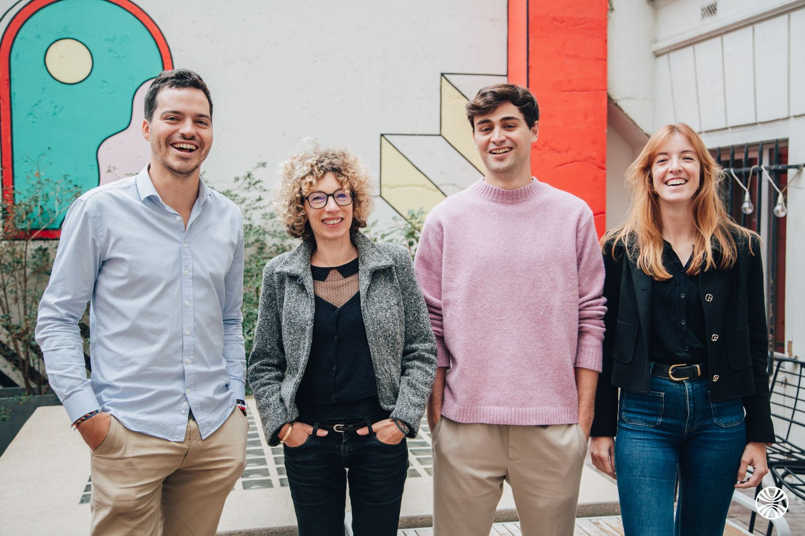

STOP GUESSING, START LISTENING.
Licter is the Social Data Intelligence consultancy. We turn what people post, search and ask AI into decisions.
Top 50 worldwide, SI Lab 2024 · trusted by 50+ organisations · 160+ projects since 2022
They tell it better than we do. On video.
Full conversations with the people who run listening inside their organisation: what they were trying to decide, and what the data changed. In French, on our channel, uncut.
 1:03:49
“It is not a study if there is no action plan.”
1:03:49
“It is not a study if there is no action plan.”
 1:00:32
“Social media helps us build better products.”
1:00:32
“Social media helps us build better products.”
 55:08
“Millions of tweets to handle, live.”
55:08
“Millions of tweets to handle, live.”
Every episode of Audience First is on the channel . One conversation a week with the people who read the conversation.
Every business question has a data answer.
Three of the twelve questions social data answers better than a survey.
Example, anonymised
11,400
posts read in three weeks, across four markets and four languages
A food group was about to change the recipe of its best seller.
- The question
- Sales were down and the surveys blamed the taste. Should they reformulate?
- What the data said
- Nobody was complaining about the taste. People were angry about the new, smaller pack, and said so in posts no survey had asked about.
- What they changed
- They kept the recipe, brought the old pack back in two markets, and sales recovered within a quarter.
Where does your listening stand?
Six questions, three minutes. Your score now, the full readout by email.
Buy answers, not licences.
Fixed fee, unlimited studies, no commitment. Consultants frame the question, configure the collection and produce the analysis.
- SOCIAL INSIGHTS Your analyses, run by experts A fixed monthly fee, unlimited studies, no tool licence to staff. For insights and marketing teams
- VIGIE 360 Alerts in 15 minutes, 24/7 Your brand, your executives and your markets, in 20+ languages. For communication and risk teams
- LISTENING AS A SERVICE Make your platform produce decisions We take over the taxonomy, the dashboards and the recurring analyses. For teams that already own a platform
Four steps, no black box.
-
Framing
We start from the business decision, not the keyword list. What will change depending on the answer, and who has to be convinced by it?
You receive a one-page brief: the decision, the question, the perimeter.
-
Collection
Social listening, audience intelligence, digital panel and search listening, combined and filtered by consultants rather than by a dashboard default.
You receive the source plan: platforms, markets, languages, period.
-
Analysis
Proprietary algorithms profile the audiences; analysts read them against your market, in the language that market actually speaks.
You receive working sessions with the analyst, not a report in your inbox.
-
Decision
A readout your teams can act on, recurring monitoring where it matters, and alerts when something moves.
You receive a recommendation, presented to the people who decide.
The team that reads it for you.
The consultant who frames your question is the one who runs the analysis and walks you through it. Nobody hands your brief to someone you have never met.

Consumer insights, communication and reputation, client direction: the people you would actually work with.
Thirty minutes with a consultant.
Pick a slot. You describe the decision, we tell you what the data can settle.
Five questions we get every week.
Is this social listening, or something else?
Social listening is one of four layers. On its own it tells you what is being said. We add audience intelligence (who is behind the accounts), a behavioural panel of about three billion consumers, and search listening. Most questions need at least two.
Do we need to own a listening platform first?
No. We work with the leading platforms and our own algorithms; the licence is ours, not a prerequisite for you. If you already pay for one and under-use it, that is exactly what Social Listening as a Service is for.
How long until the first usable answer?
A focused read is a matter of days rather than weeks. A full diagnostic of an existing setup takes two to three weeks. Continuous monitoring starts alerting as soon as the perimeter is configured.
Which markets and languages do you cover?
Monitoring runs in more than twenty languages, and our consultants work in Mandarin, English, Spanish, Hindi, Cantonese and Arabic. A market read through machine translation is a market read half-wrong.
What does it cost?
A fixed monthly fee, with unlimited studies inside it, and no commitment. The exact level depends on the perimeter: markets, languages, monitoring. Thirty minutes is usually enough to give you a number.